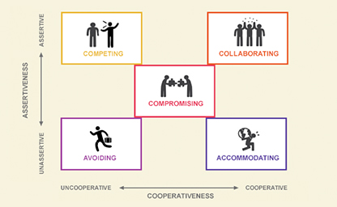

The Eight Key Attributes of a Conflict Situation: When to Use Each Conflict-Handling Mode Most Effectively
Thomas-Kilmann Conflict Mode Instrument
Thomas-Kilmann Conflict Mode Instrument (TKI) is a conflict-style assessment tool, which is currently the best-selling conflict management tool in the world. Developed by Kenneth W. Thomas and Ralph H. Kilmann in 1974, it has sold over 8 million copies and is available in multiple languages. It can help you understand your tendencies and preferences when facing conflict, and how to choose the most appropriate coping strategy according to different situations.
TKI has 30 questions, each question has two options, you need to choose one of the options to express your attitude in the conflict. TKI divides conflict styles into five types based on how concerned you are with your own needs and the needs of others: Competitive, Compromising, Avoidant, Cooperative, and Accommodating. These styles reflect your varying degrees of initiative and cooperation in conflict situations.
Using TKI can help you recognize your strengths and weaknesses, improve your communication skills and teamwork skills, reduce your work pressure and conflict costs, and improve your leadership and performance. TKI does not require professional qualifications to use, and it is applicable to conflict management at all levels including individuals, teams, organizations and societies.
References
Thomas-kilmann conflict mode instrument (TKI®). (n.d.). The Myers-Briggs Company.
https://www.themyersbriggs.com/en-US/Products-and-Services/TKI
Kilmann, R. H. (2022, September 13). Take the Thomas-kilmann conflict mode instrument (TKI).Kilmann Diagnostics.
https://kilmanndiagnostics.com/overview-thomas-kilmann-conflict-mode-instrument-tki/